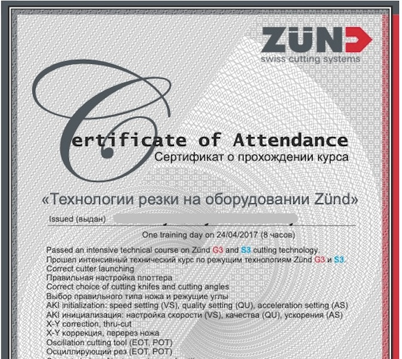
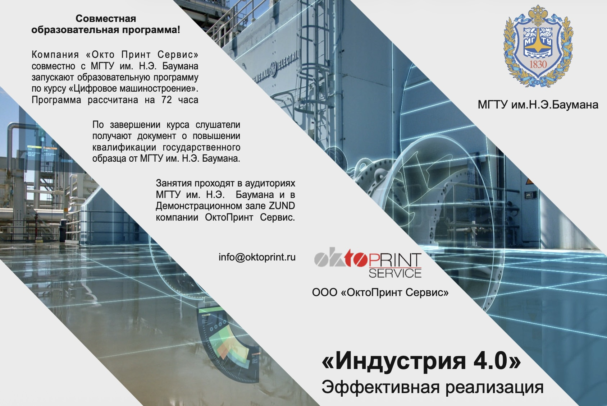
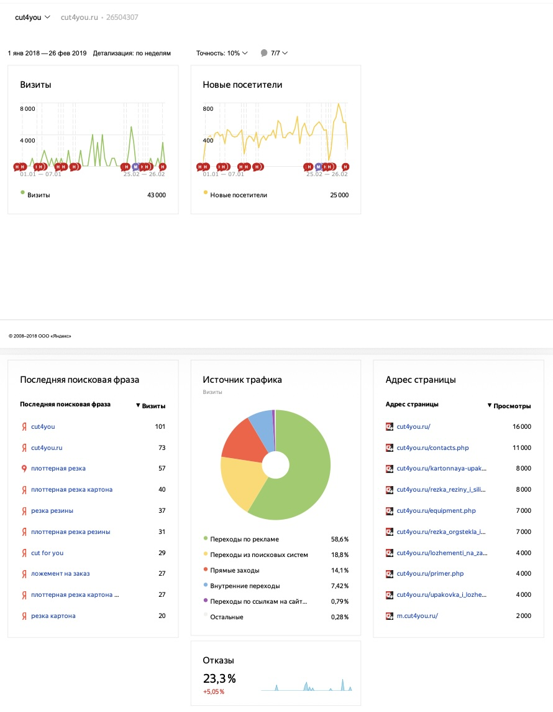
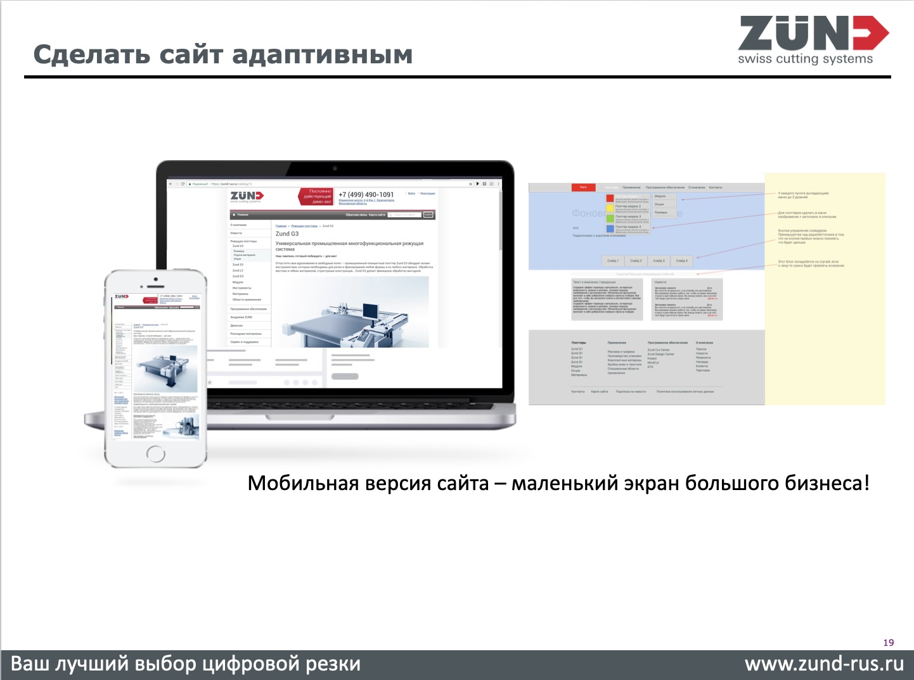
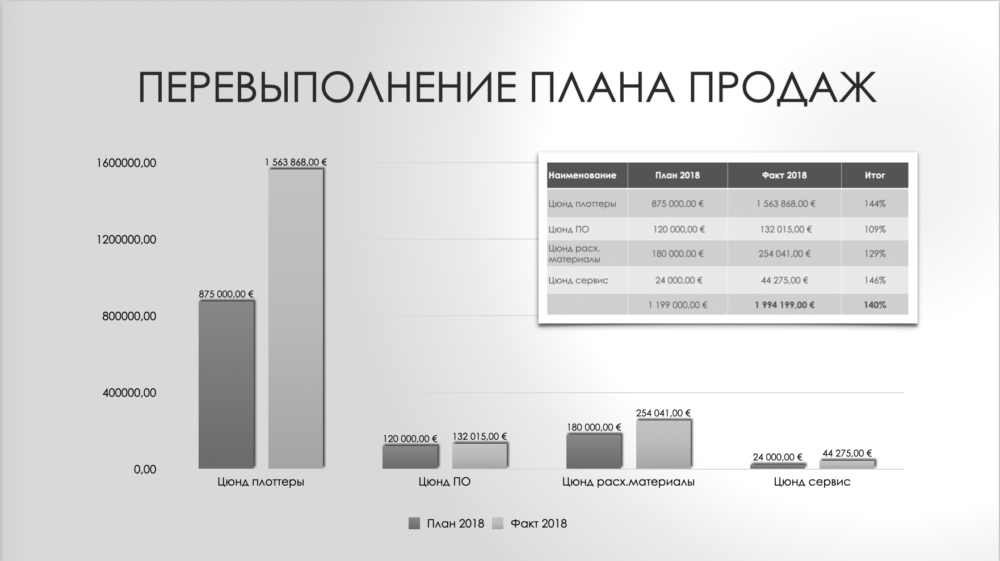
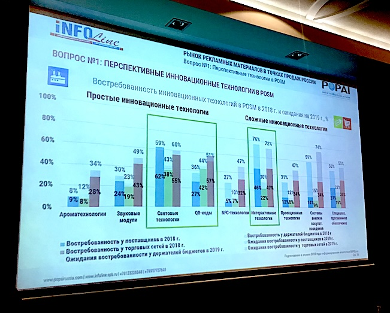
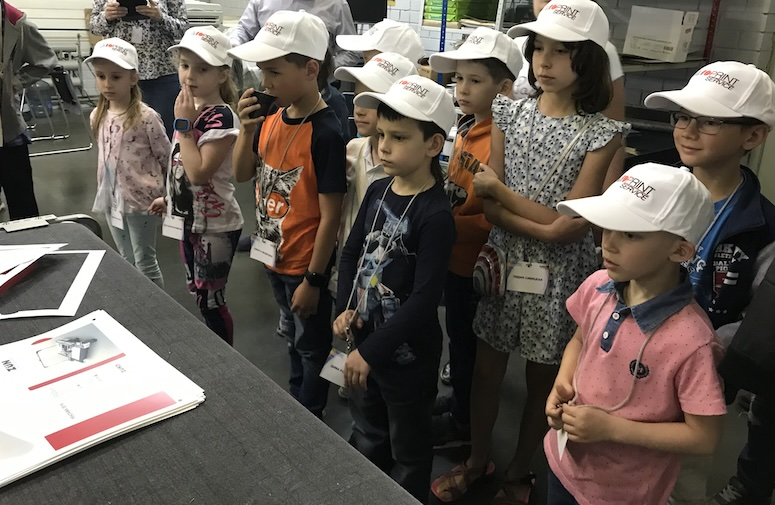
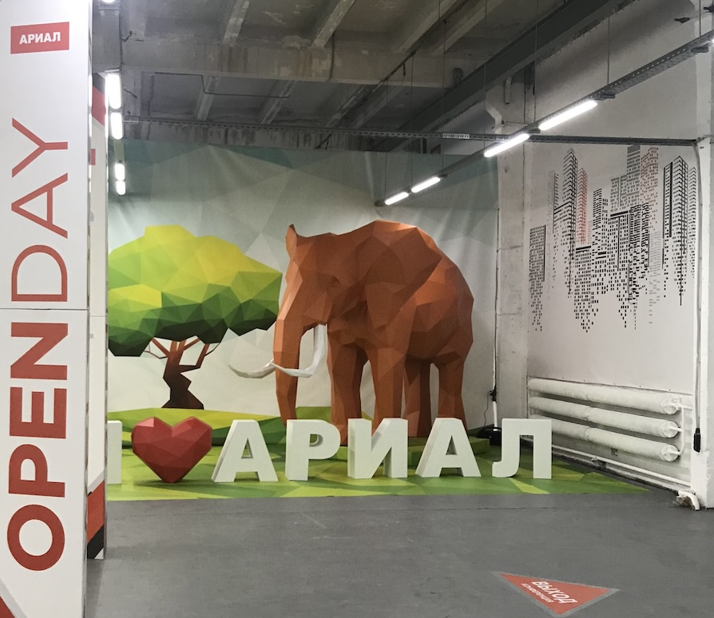

Трансформация B2B-маркетинга в компании-официальном представителе Zünd Systemtechnik AG. Запуск собственной Академии, создание направления услуг cut4you, открытие программы с МГТУ им. Н.Э. Баумана и работа с комьюнити.








| Направление | Что сделано |
|---|---|
| Академия ZUND | Запуск платного обучения и сертификации инженеров по резке и фрезерованию (совместно с офисом в Швейцарии). |
| МГТУ им. Баумана | Запуск программы «Цифровое машиностроение» (72 часа), ремонт аудитории, выдача гос. дипломов. |
| Cut4you | Создание нового направления услуг резки. Конверсия клиентов услуг в покупателей плоттеров. |
| Сайт zund-rus.ru | Полный редизайн, аудит юзабилити, работа с SEO и семантическим ядром, повышение конверсии. |
| Комьюнити и PR | Экскурсии для детей сотрудников, выступления на вебинарах POPAI, поездки к VIP-клиентам (Ариал), запись историй успеха для СМИ. |
| Результат | Клиентская база: 1 210 → 3 700. План продаж на 2018 год выполнен на 140%. |
На момент прихода в компанию маркетинг работал разрозненно: сайт, выставки и digital жили отдельно. Нужно было продавать больше промышленного оборудования (плоттеров Zünd) и создать систему.
Академия ZUND и Бауманка. Мы перевели курсы швейцарского офиса, адаптировали их и запустили платное обучение. А затем пошли дальше — отремонтировали большую аудиторию и запустили совместную программу с МГТУ им. Н.Э. Баумана по курсу «Цифровое машиностроение» (72 часа) с выдачей диплома государственного образца.
Cut4you — новое направление. Запустили услуги резки для тех, кому оборудование было не по карману. Клиенты заказывали резку по 27 ₽ за м², видели статистику расходов, и на её основе мы показывали возможность покупки оборудования в лизинг. Многие клиенты услуг впоследствии покупали плоттер.
Сайт и продвижение. Провели глубокий аудит zund-rus.ru, выявили проблемы с юзабилити и конверсией, переписали тексты (с проверкой на «воду» и уникальность), проработали семантическое ядро. Разработали новый современный сайт и запустили SEO-продвижение.
Комьюнити и работа с клиентами. Чтобы «оживить» бренд, мы начали проводить экскурсии на производство. Первыми гостями стали дети сотрудников (на них я тестировала формат). Также я регулярно выступала на совместных вебинарах с POPAI, ездила в офисы VIP-клиентов (например, в компанию «Ариал»), где мы вместе записывали истории успеха и публиковали их в профильных изданиях.